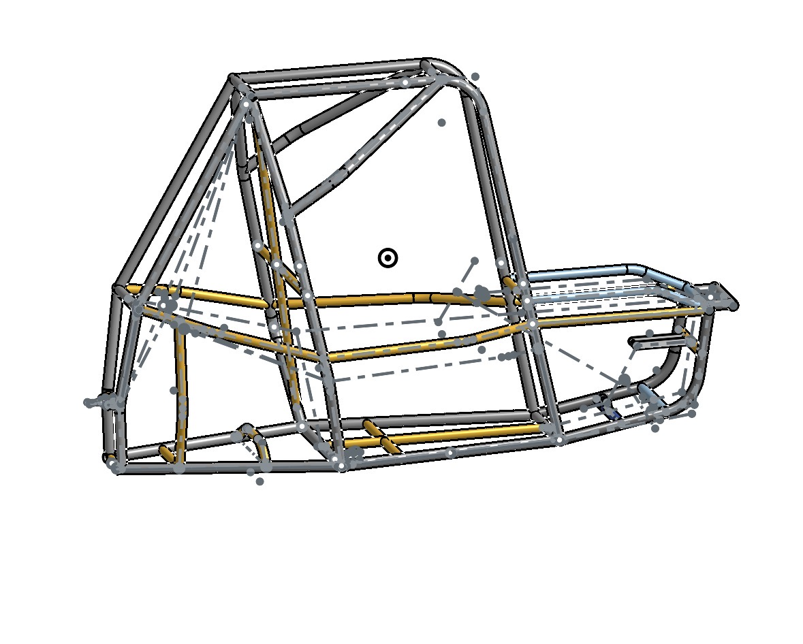

3D CAD & Mechanical Design
Experience developing mechanical components and assemblies using SolidWorks and Onshape, including design iterations, component integration, and engineering drawings.

As the Front Drivetrain Lead for SPU Falcon Racing, I lead a five-person team responsible for developing the front drivetrain of our Baja SAE off-road vehicle. My primary focus is designing and integrating a selectable all-wheel-drive system, including differential integration, driveshaft routing, drivetrain geometry, and torque requirements.
I coordinate design decisions and collaborate with team members on CAD development, component selection, and drivetrain integration. Using SolidWorks and Onshape, we develop and evaluate mechanical designs with consideration for performance, reliability, manufacturability, and vehicle packaging. I also contribute to manufacturing, assembly, and vehicle testing.

Led the redesign of a protective housing for a nuclear magnetic resonance (NMR) wireline logging probe as part of my manufacturing internship. I independently directed the project, with technical input and guidance from my supervisors.
My work included evaluating engineering materials for demanding downhole environments, with particular emphasis on hydrostatic collapse resistance, mechanical strength, machinability, and compatibility with NMR instrumentation. I researched and compared materials including glass-fiber- reinforced PEEK, natural PEEK, PPS, and G10 while investigating domestic manufacturing capabilities and sourcing options. I also evaluated housing dimensions, material properties, and structural performance to identify potential design improvements.

Served as the Lead Mechanical Engineer on a junior design team developing a compact temperature and humidity-controlled test chamber. I was primarily responsible for the mechanical design and housing development, collaborating with teammates responsible for other aspects of the system.
My responsibilities included developing the chamber enclosure in CAD, determining component placement, and designing the housing to accommodate the heating, humidification, and ventilation systems while maintaining a separate electrical compartment. I also evaluated thermal performance, moisture management, and system integration to support the development of a functional prototype.
Alongside my larger engineering projects, I have developed experience in CAD design, manufacturing, mechanical analysis, and hands-on problem solving through coursework, team projects, and practical work.

Experience developing mechanical components and assemblies using SolidWorks and Onshape, including design iterations, component integration, and engineering drawings.

Hands-on experience with welding, 3D printing, prototyping, assembly, and mechanical fabrication through Thermal Testing Chamber project, 3D prototyping, and Baja SAE Falcon Racing.

Experience applying engineering principles through MATLAB, Simulink, mechanics of materials, calculations, and finite element analysis.

Practical experience with vehicle maintenance, HVAC systems, mechanical troubleshooting, and general equipment maintenance.